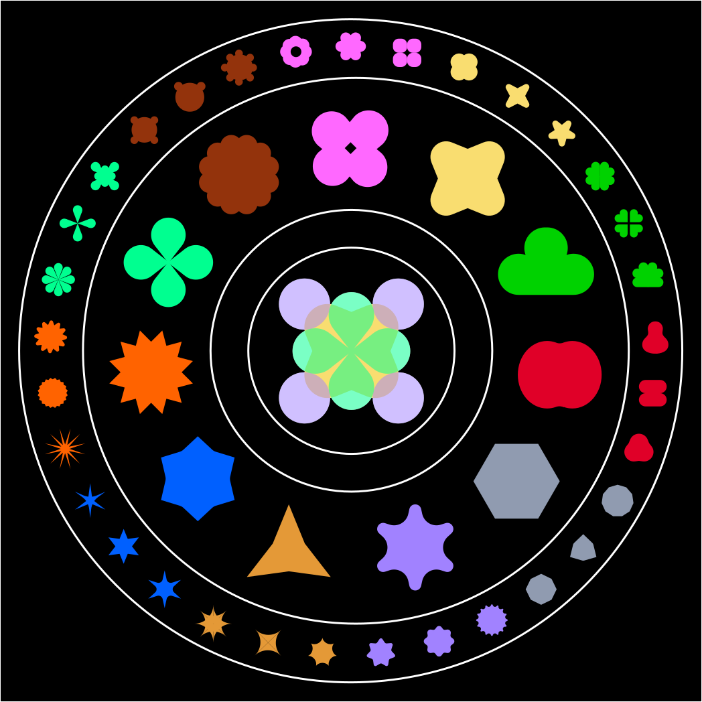
Context
RMIT University
My role
UI/UX, visual design, motion
Field
Sensory tech, AI
Date
October 2025
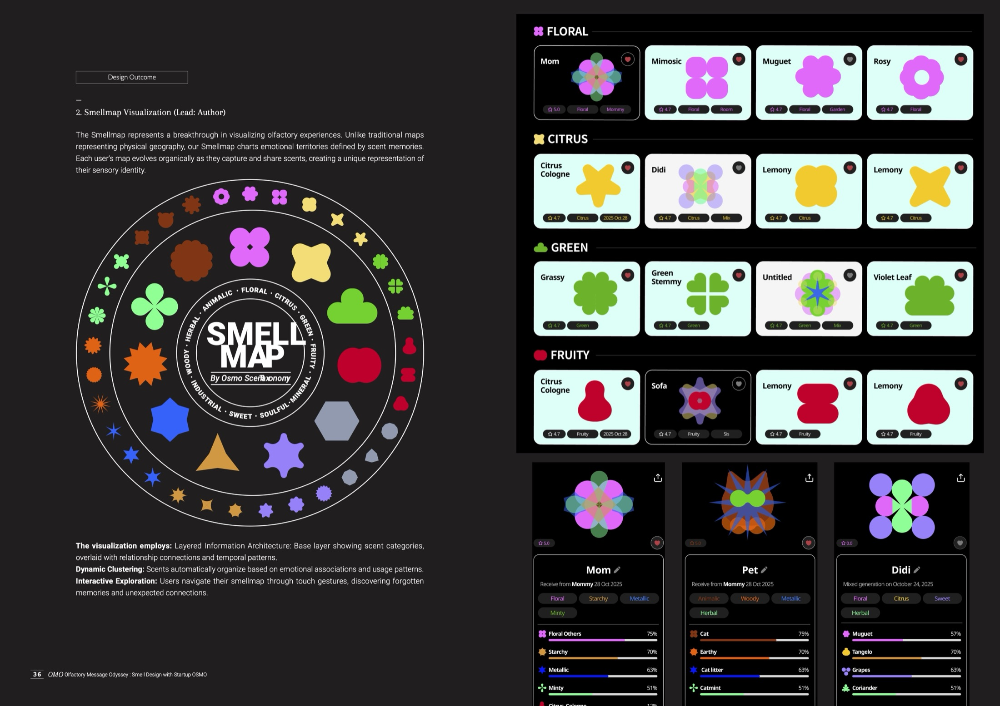
Key
features
The app is built around five features. Each one follows a single, simple path, so the technology stays in the background and the moment of sharing stays in front.
01 Detect and send
Scan something with the detector, see what it's made of, and send it to a friend as an O-message.
02 Play and protect
Play a received scent through the diffuser. If a message carries something unpleasant, the app flags it so you can block it first.
03 Visual recognition
Point the camera at an object and the app matches it with scent data from the cloud library.
04 Custom blends
Pick scents from your album and blend them into one of your own, then save it or send it.
05 Mood and wellness
Syncs with Apple Health to show how the scents you use line up with your mood over time.
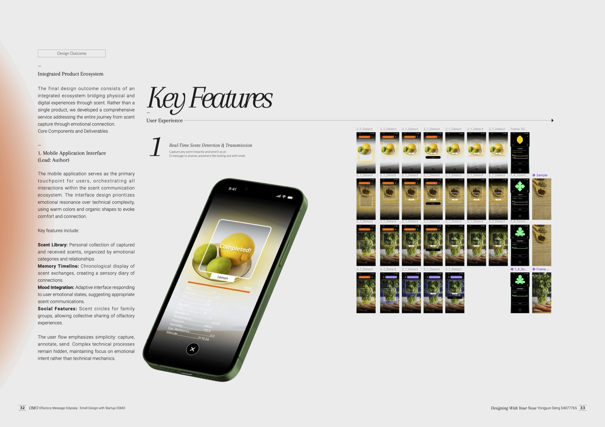
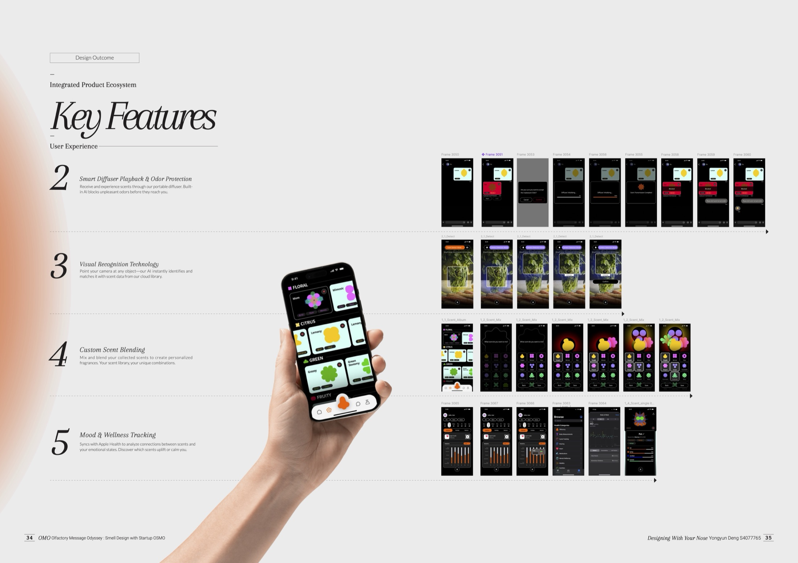
Prototype
For the RMIT exhibition, we connected the app to a working prototype. My teammates ran SmellNet for scent recognition and YOLO for object detection on the backend, and the results showed up in the app as they happened. Visitors could scan a lemon, watch it get analyzed, and send it to a friend.
Challenge
In 2024, the scent startup Osmo said that one day we would be able to send a smell the way we send a photo. It stayed an idea.
We wanted to see what that could look like. For students and remote workers living far from home, the things they miss most are often smells: a parent's cooking, a pet, the air after rain in a familiar garden. Photos and video calls can't carry any of that. Our challenge was to take a sense that's invisible and hard to put into words, and make it something people can see, keep and share.
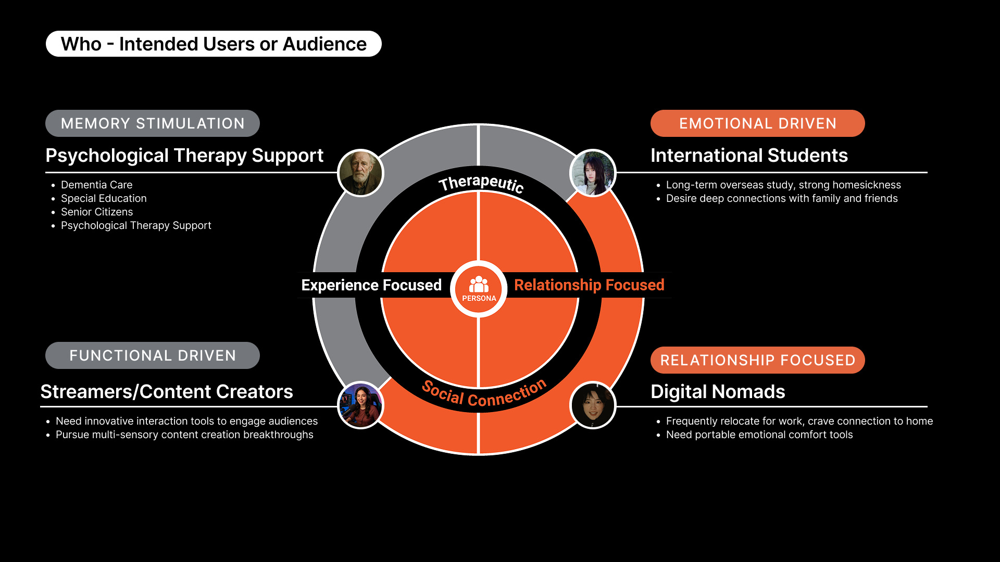
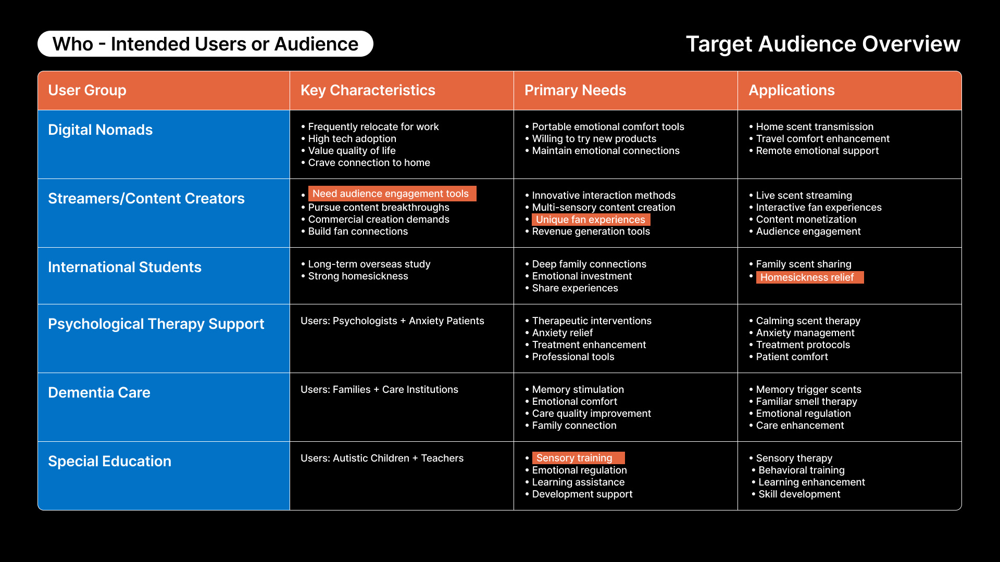
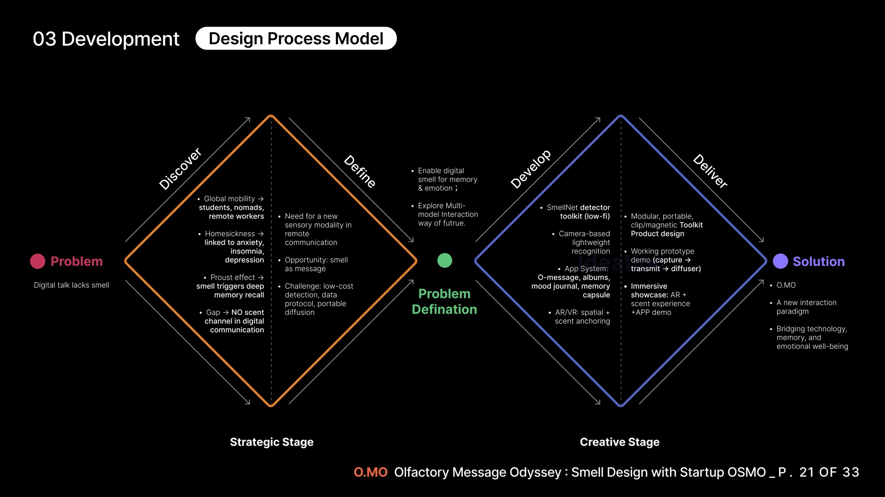
Process
I started on paper. Before opening Figma, I sketched the three flows the app had to get right: detecting a scent and sending it to a friend, building an album and mixing new blends, and tracking how scents relate to mood through Apple Health.
Sketching first kept the conversation on what a person would actually do with a smell, not on the hardware behind it. From there I moved each flow into wireframes and then into high fidelity screens.
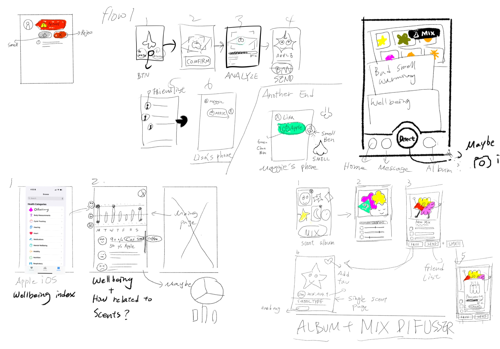
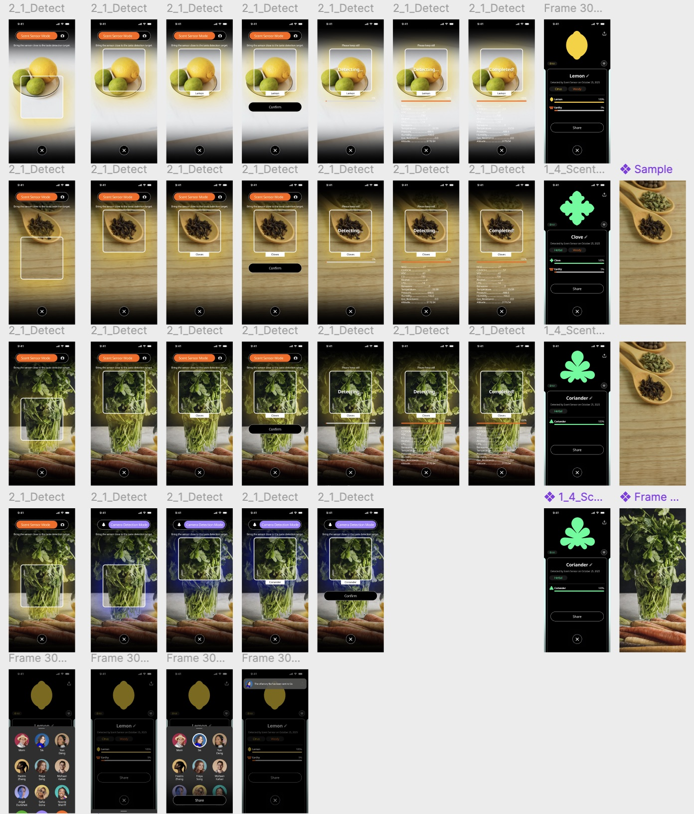
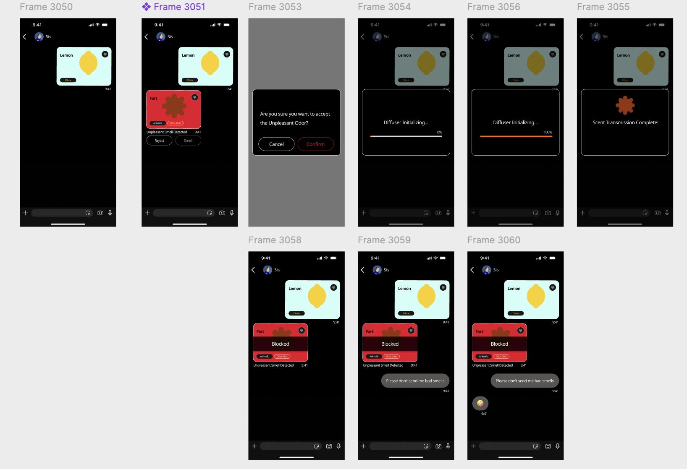
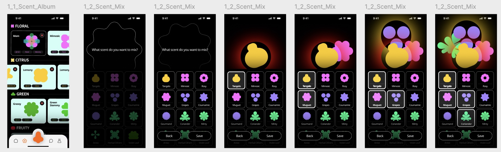
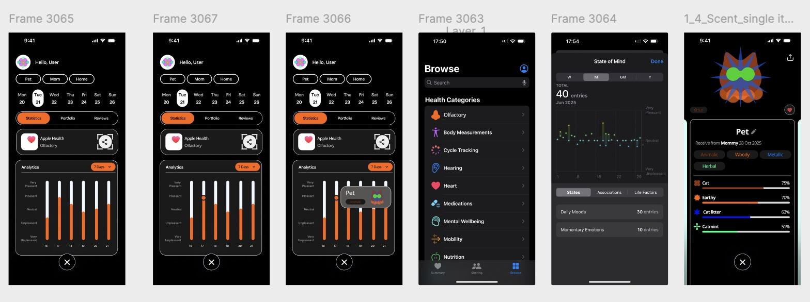
Solution
O.MO is a mobile app that works with a small scent detector and diffuser. I designed the app and the visual language behind it.
Osmo's scent taxonomy sorts smells into families like floral, citrus, green and woody. I gave each family its own shape and color, then built the Smell Map around them. Every scent you save becomes a small graphic you can recognize at a glance, and when you mix scents together, their shapes layer into something new. A smell from home turns into something you can collect, remix and send.
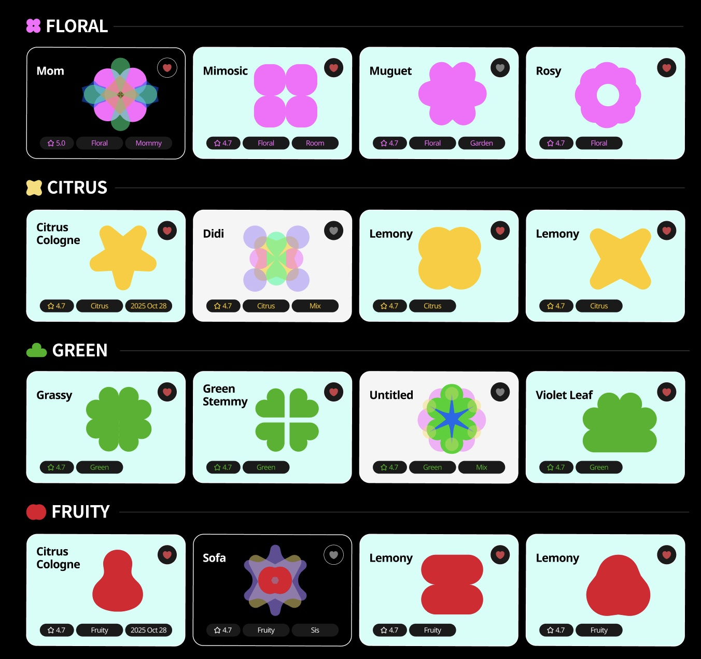
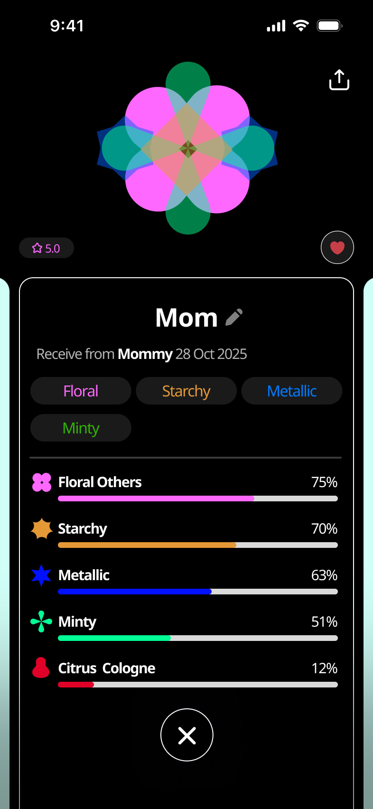
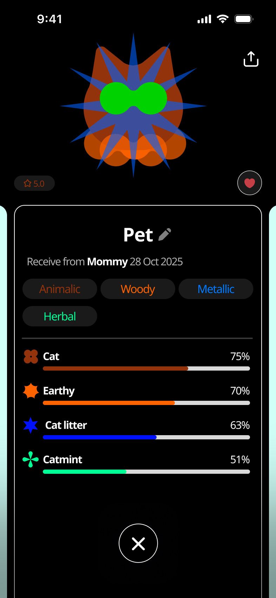
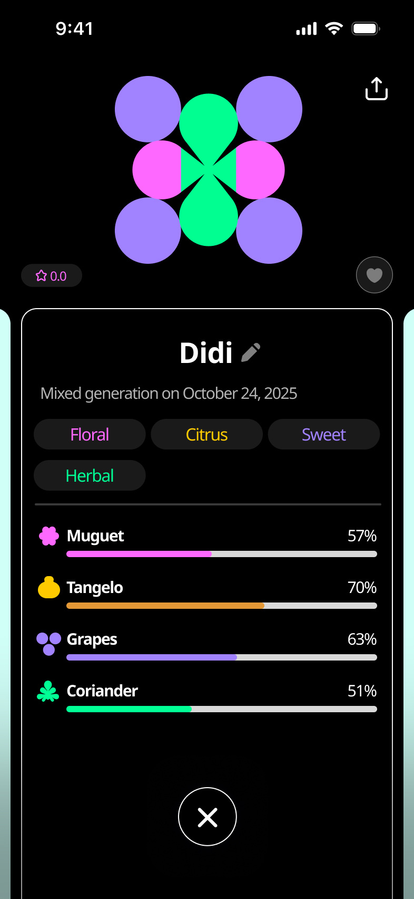
Credits
O.MO was a team project at RMIT University. I led the app design, visual identity and motion. Yujie Song and Erhan Zheng worked on the hardware, the AI models and development.
Mohsen Kafaei
Supervisor, RMIT University